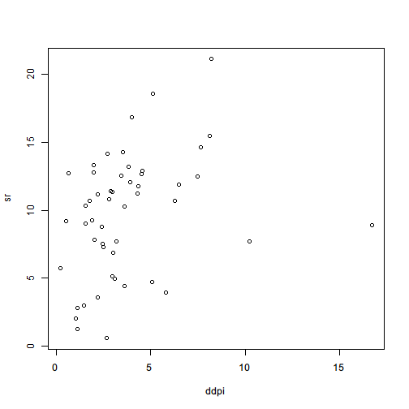

Formula is an object used to represent an relationship between two sets of symbols. A formula is often created with ~ like z ~ x + y. It has no meaning unless a function interprets it. The most commonly seen usage of a formula is in lm function that performs a linear regression.
Note that it is the function that interprets what the formula means. The following example shows different meanings when you write the formula in different ways.
The following example works with a built-in dataset named LifeCycleSavings. We can load it with data() function.
> data(LifeCycleSavings)
From the documentation, we know that this dataset is the intercountry life-cycle savings data with the following structure:
| Column | Type | Description |
|---|---|---|
sr |
numeric | aggregate personal savings |
pop15 |
numeric | % of population under 15 |
pop75 |
numeric | % of population over 75 |
dpi |
numeric | real per-capita disposable income |
ddpi |
numeric | % growth rate of dpi |
Once the data is loaded into the environment, we can run a series of linear regressions by lm() function under different settings. Here we only demonstrate how lm() interprets different formulas. We will go into details of linear model fit in later chapters.
If we want to build a linear model in which pop15, pop75, dpi and ddpi are used to explain sr, we can construct a formula to represent it.
> lm(sr ~ pop15 + pop75 + dpi + ddpi,data=LifeCycleSavings)
Call:
lm(formula = sr ~ pop15 + pop75 + dpi + ddpi, data = LifeCycleSavings)
Coefficients:
(Intercept) pop15 pop75 dpi ddpi
28.566087 -0.461193 -1.691498 -0.000337 0.409695
Since formula is simply an object, we can create it and pass it around, fit a linear model, and read its summary.
> formula1 <- sr ~ pop15 + pop75 + dpi + ddpi
> model1 <- lm(formula1,data=LifeCycleSavings)
> summary(model1)
Call:
lm(formula = formula1, data = LifeCycleSavings)
Residuals:
Min 1Q Median 3Q Max
-8.242 -2.686 -0.249 2.428 9.751
Coefficients:
Estimate Std. Error t value Pr(>|t|)
(Intercept) 28.566087 7.354516 3.88 0.00033 ***
pop15 -0.461193 0.144642 -3.19 0.00260 **
pop75 -1.691498 1.083599 -1.56 0.12553
dpi -0.000337 0.000931 -0.36 0.71917
ddpi 0.409695 0.196197 2.09 0.04247 *
---
Signif. codes: 0 '***' 0.001 '**' 0.01 '*' 0.05 '.' 0.1 ' ' 1
Residual standard error: 3.8 on 45 degrees of freedom
Multiple R-squared: 0.338, Adjusted R-squared: 0.28
F-statistic: 5.76 on 4 and 45 DF, p-value: 0.00079
Note that the regression includes the intercept by default. We can make it explicit in the formula:
lm(sr~1+pop15+pop75+dpi+ddpi,data=LifeCycleSavings)
If we need to avoid the intercept in the regression equation, we can put a zero intercept in the formula
> lm(sr~0+pop15+pop75+dpi+ddpi,data=LifeCycleSavings)
Call:
lm(formula = sr ~ 0 + pop15 + pop75 + dpi + ddpi, data = LifeCycleSavings)
Coefficients:
pop15 pop75 dpi ddpi
0.091723 1.713944 0.000263 0.553164
or equivalently use -1 to remove the intercept.
lm(sr~pop15+pop75+dpi+ddpi-1,data=LifeCycleSavings)
If there are too many regressors, it can be time-consuming to written them down. We can use . to represent all the resting columns.
> lm(sr~.,data=LifeCycleSavings)
Call:
lm(formula = sr ~ ., data = LifeCycleSavings)
Coefficients:
(Intercept) pop15 pop75 dpi ddpi
28.566087 -0.461193 -1.691498 -0.000337 0.409695
If there are many regressors, but we need all the rest columns except a few of them, we can append the formula with some "negative" terms to remove some of those represented by ..
> lm(sr~.-ddpi,data=LifeCycleSavings)
Call:
lm(formula = sr ~ . - ddpi, data = LifeCycleSavings)
Coefficients:
(Intercept) pop15 pop75 dpi
31.457381 -0.492142 -1.567675 -0.000834
Linear model can be extended to log-linear model. It is very easy to make such transformation: just add log() function to the terms we need.
> lm(log(sr)~log(pop15)+log(pop75)+log(dpi)+ddpi,data=LifeCycleSavings)
Call:
lm(formula = log(sr) ~ log(pop15) + log(pop75) + log(dpi) + ddpi,
data = LifeCycleSavings)
Coefficients:
(Intercept) log(pop15) log(pop75) log(dpi) ddpi
10.0182 -2.1107 -0.4137 -0.0669 0.0605
It is very handy to add interactive terms with *.
> lm(sr~pop15*pop75+dpi,data=LifeCycleSavings)
Call:
lm(formula = sr ~ pop15 * pop75 + dpi, data = LifeCycleSavings)
Coefficients:
(Intercept) pop15 pop75 dpi pop15:pop75
29.655787 -0.437595 -0.526660 -0.000883 -0.034956
If we want to transform the data before fitting, we can call I() at the transformed regressor to avoid lm() misinterprets the term as formula transformation.
> lm(sr~pop15+I(pop15^2)+pop75+I(pop75^2)+dpi+ddpi,data=LifeCycleSavings)
Call:
lm(formula = sr ~ pop15 + I(pop15^2) + pop75 + I(pop75^2) + dpi +
ddpi, data = LifeCycleSavings)
Coefficients:
(Intercept) pop15 I(pop15^2) pop75 I(pop75^2)
40.07747 -0.95413 0.00619 -3.78235 0.34356
dpi ddpi
-0.00037 0.44072
All above examples are the formula interpreted by lm() function. The interpretation is not by definition true for all functions. In fact, every function can define its own ways to interpret a formula which, in essence, nothing more than a pair expressions connected with ~.
Another example to show how different functions interpret formulas in different ways is plot() function.
> plot(sr~ddpi,data=LifeCycleSavings)

The formula to plot is interpreted as plot sr as y-axis and ddpi as x-axis. It is consistent with our experience in mathematics when we write an equation $y = f(x)$ in which the left-hand side usually represents the y-axis, and the right-hand side the x-axis.
Some functions in other packages also accept formula as an argument and the interpretation almost follow the same conventions, which makes it easy to use and learn. In later chapters, we will see how formula is used by reshape2 package to transform data format.